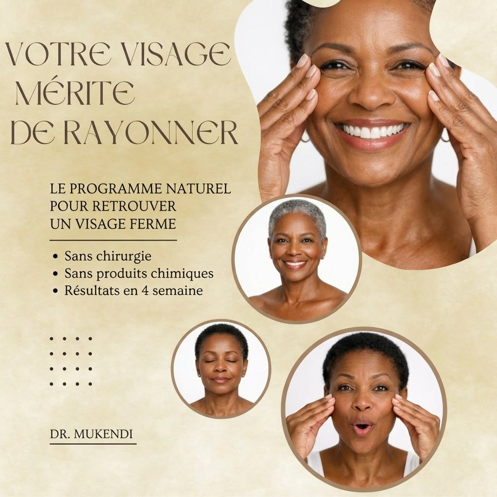
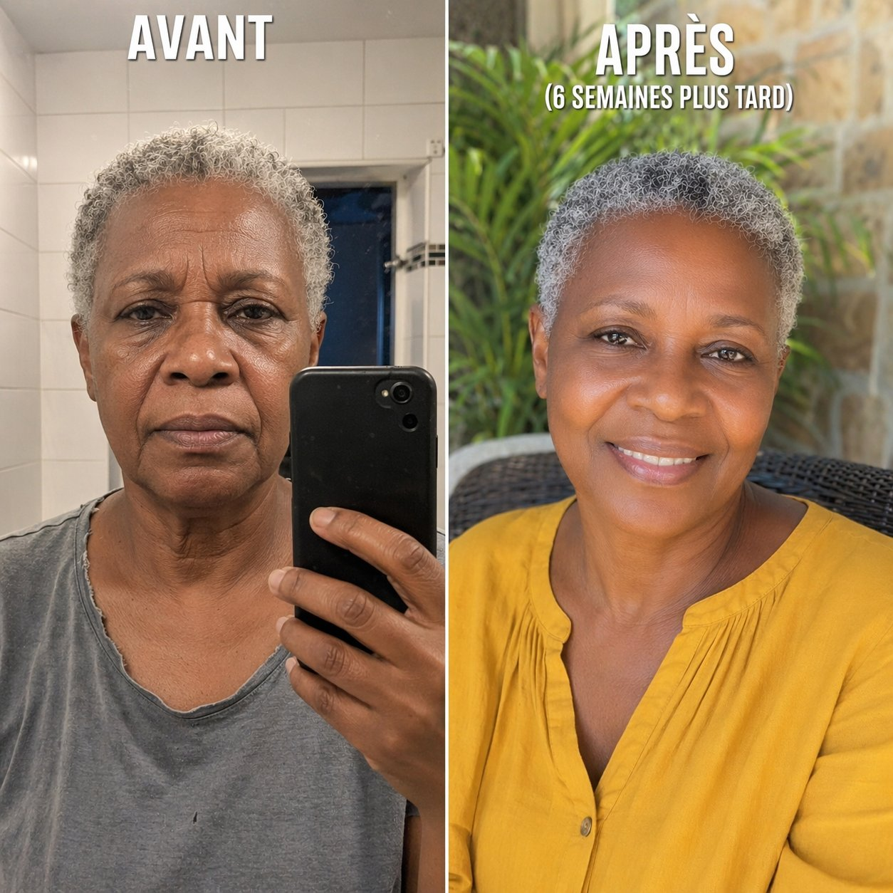
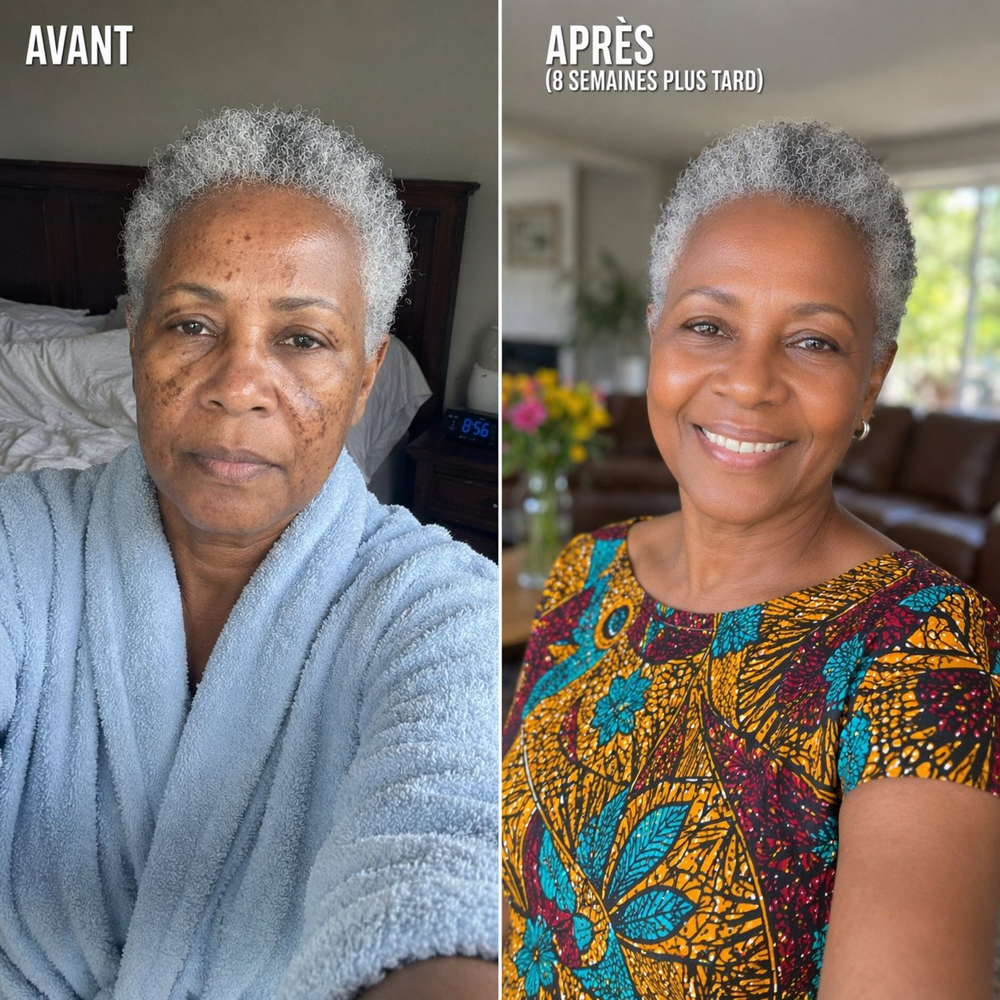
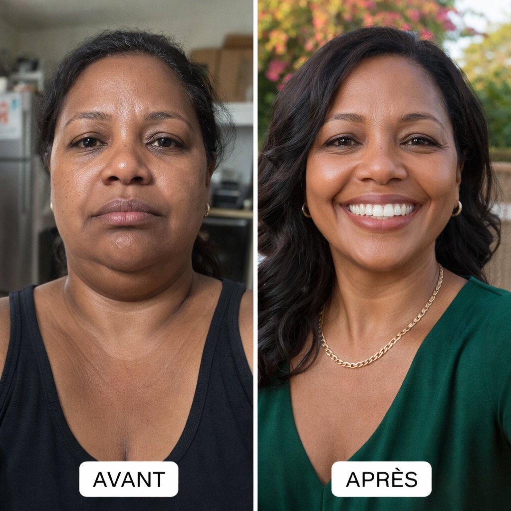
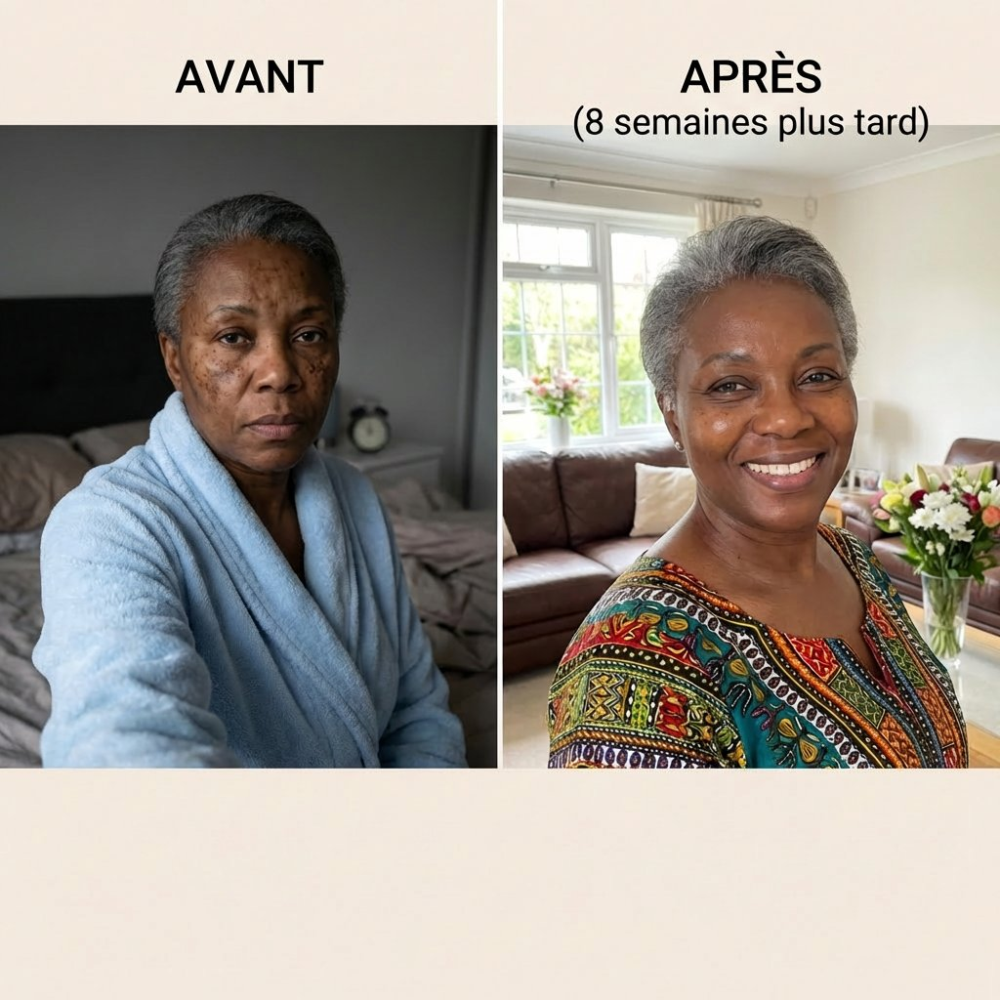

Des guides experts du Dr Mukendi pour transformer votre peau après 45 ans avec des ingrédients 100% naturels que vous avez déjà chez vous.
Regardez cette courte vidéo de présentation
Découvrez nos programmes complets conçus par le Dr Mukendi

Mukendi Skin Care
Le programme anti-âge naturel de 30 jours — Exercices faciaux, masques maison et routine complète
Le programme anti-âge naturel de 30 jours
Vous remarquez que votre visage a changé ? Les rides du front qui se creusent, les joues qui s'affaissent, ce double menton qui n'existait pas avant... Vous n'êtes pas seule. Et surtout : ce n'est PAS une fatalité.
Ce que vous allez découvrir
Ce qui est inclus
Mukendi Skin Care
Remèdes naturels pour une peau nette et lumineuse — Recettes, routines et techniques éprouvées
Retrouvez une peau nette et lumineuse
Découvrez les remèdes naturels simples pour effacer taches, cicatrices et cernes — et retrouver une peau nette sans vous ruiner. Des solutions accessibles, des résultats visibles, sans produits chimiques agressifs.
Ce que vous allez découvrir
Ce qui est inclus
Grâce aux méthodes naturelles du Dr Mukendi

Martine, 58 ans
Après 6 semaines
Réduction visible des rides du front et ovale du visage nettement plus ferme grâce aux exercices faciaux quotidiens.
Guide : « Comment Rester Jeune Pratiquement Pour Toujours »

Christine, 64 ans
Après 8 semaines
Taches brunes sur le visage considérablement atténuées avec les remèdes naturels au curcuma et au citron.
Guide : « Comment Effacer Taches, Cicatrices et Cernes »

Sylvie, 52 ans
Après 5 semaines
Double menton nettement réduit et mâchoire mieux définie grâce au programme progressif d'exercices du cou.
Guide : « Comment Rester Jeune Pratiquement Pour Toujours »

Brigitte, 67 ans
Après 8 semaines
Cernes considérablement éclaircis et teint beaucoup plus lumineux grâce aux compresses naturelles et à la routine éclat.
Guide : « Comment Effacer Taches, Cicatrices et Cernes »
Plus de 5000 femmes nous font confiance
Martine, 58 ans
Kinshasa, RDC
« Je me regardais dans le miroir et je ne me reconnaissais plus. Ces rides sur mon front, cette peau qui tombait... J'avais l'impression d'avoir vieilli de 10 ans d'un coup. Après 4 semaines d'exercices faciaux, mon mari m'a dit : "Tu as fait quelque chose à ton visage ? Tu rayonnes." Je n'en revenais pas. »
📖 Guide Anti-ÂgeChristine, 64 ans
Abidjan, Côte d'Ivoire
« Mes taches brunes sur les mains me complexaient depuis des années. J'ai essayé tellement de crèmes chères sans résultat. Le masque au curcuma du guide m'a changé la vie en seulement 6 semaines. Mes mains ont retrouvé un teint uniforme et j'ose enfin les montrer. »
📖 Guide Taches & CernesSylvie, 52 ans
Douala, Cameroun
« Mon double menton me rendait folle. Je tournais la tête sur chaque photo pour le cacher. Après le programme de 30 jours, la différence est incroyable. Ma mâchoire est redessinée et je prends enfin des selfies de face. C'est un vrai regain de confiance. »
📖 Guide Anti-ÂgeBrigitte, 67 ans
Dakar, Sénégal
« À 67 ans, j'avais des cernes si profonds que les gens me demandaient si j'étais malade. La technique du concombre et de l'huile d'amande du guide a tout changé. Mon regard est plus lumineux, plus reposé. Mes petits-enfants me disent que je fais plus jeune ! »
📖 Guide Taches & CernesMonique, 55 ans
Brazzaville, Congo
« Les exercices faciaux, j'y croyais pas du tout. Je me disais "c'est des bêtises". Mais au bout de 3 semaines, mes bajoues avaient fondu. Littéralement. Ma sœur m'a demandé si j'avais fait du Botox. Quand je lui ai dit que c'était juste 10 minutes par jour, elle a commandé le guide aussi ! »
📖 Guide Anti-ÂgeCatherine, 49 ans
Lomé, Togo
« Mes cicatrices d'acné me suivaient depuis l'adolescence. 30 ans à mettre du fond de teint épais pour les cacher. Le sérum naturel au miel et à l'aloe vera du guide les a atténuées comme rien d'autre avant. Je sors enfin sans maquillage et je me sens belle. »
📖 Guide Taches & CernesFrançoise, 61 ans
Paris, France
« J'ai suivi le programme des 30 jours à la lettre. Semaine 1 : front. Semaine 2 : joues. Et ainsi de suite. À la fin du mois, la transformation était évidente. Mon ovale du visage est redessiné, ma peau est plus ferme. Je me sens rajeunie de 5 ans, sans avoir dépensé un centime en crèmes. »
📖 Guide Anti-ÂgeNicole, 70 ans
Libreville, Gabon
« À 70 ans, je pensais que c'était trop tard pour mes taches de vieillesse. Le guide m'a prouvé le contraire. Avec le masque au citron et au yaourt, mes taches sur le décolleté ont pâli semaine après semaine. Mon éclat est revenu. Je me sens vivante et belle à nouveau. »
📖 Guide Taches & CernesIsabelle, 47 ans
Yaoundé, Cameroun
« Je n'avais jamais essayé les masques maison. Je trouvais ça "amateur". Mais le masque à la banane et au miel du guide m'a bluffée dès la première utilisation. Ma peau était douce, lumineuse, comme après un soin en institut. Et ça ne m'a coûté que quelques centimes ! »
📖 Guide Anti-ÂgeJacqueline, 65 ans
Cotonou, Bénin
« Mes cernes me donnaient un air épuisé en permanence. J'avais honte de sortir sans lunettes de soleil. Grâce aux compresses naturelles et à la routine du guide, mes yeux ont retrouvé leur éclat. J'ai retrouvé confiance en moi et je me maquille à peine maintenant. »
📖 Guide Taches & CernesUne approche unique qui change tout
Aucun produit chimique. Que des ingrédients que vous avez déjà dans votre cuisine.
Méthodes basées sur la science et l'expérience clinique du Dr Mukendi.
Pas besoin de dépenser des fortunes en crèmes. Tout coûte moins de 10€ par mois.
Seulement 10 minutes par jour. Des résultats visibles dès 2 semaines.
Médecin Généraliste — Spécialiste en Santé Naturelle
Salut ! C'est Dr Mukendi, Médecin Généraliste passionné par la santé et le bien-être. J'accompagne les femmes à prendre soin d'elles naturellement. Mes programmes anti-âge et soins de la peau sont le fruit de mes recherches et de ma passion pour le bien-être au quotidien.
Ma mission : vous aider à retrouver une peau ferme et éclatante avec des méthodes simples, naturelles et accessibles à toutes — sans crèmes coûteuses ni interventions médicales.
Essayez nos guides sans risque. Si dans les 30 jours après votre achat, vous n'êtes pas pleinement satisfaite des résultats, nous vous remboursons intégralement. Aucune question posée.
Tout ce que vous devez savoir avant de commencer
Rejoignez les milliers de femmes qui ont déjà retrouvé confiance en leur reflet
Découvrir nos guides